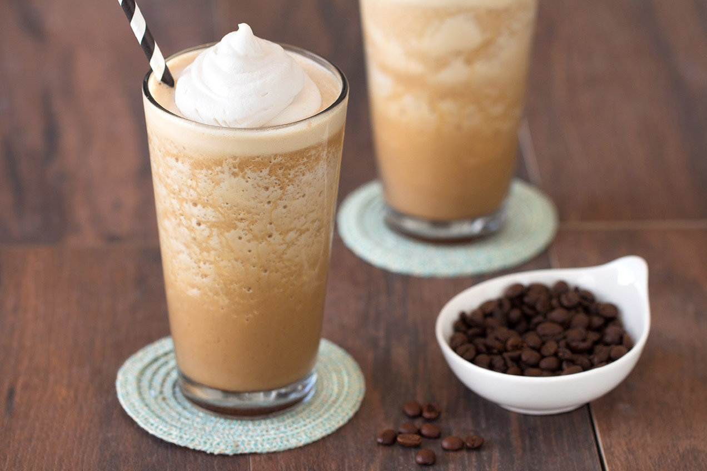

Vanilla Coffee Shake
Home

A delicious on the go snack to hit your protein goals!
This recipe is a tasty, high protein snack that can be enjoyed in under 5 minutes!
Ingredients
- 1/2 cup vanilla almond milk
- 1/2 cup cold brewed black coffee
- 2 scoops vanilla protein powder
- liquid stevia to taste
- 1 handfull of ice cubes
Steps
- Pour vanilla almond milk, liquid stevia, coffee, and protein powder in blender.
- Blend then pour into a cup of your choice.
- Add ice cubes.
- Enjoy!